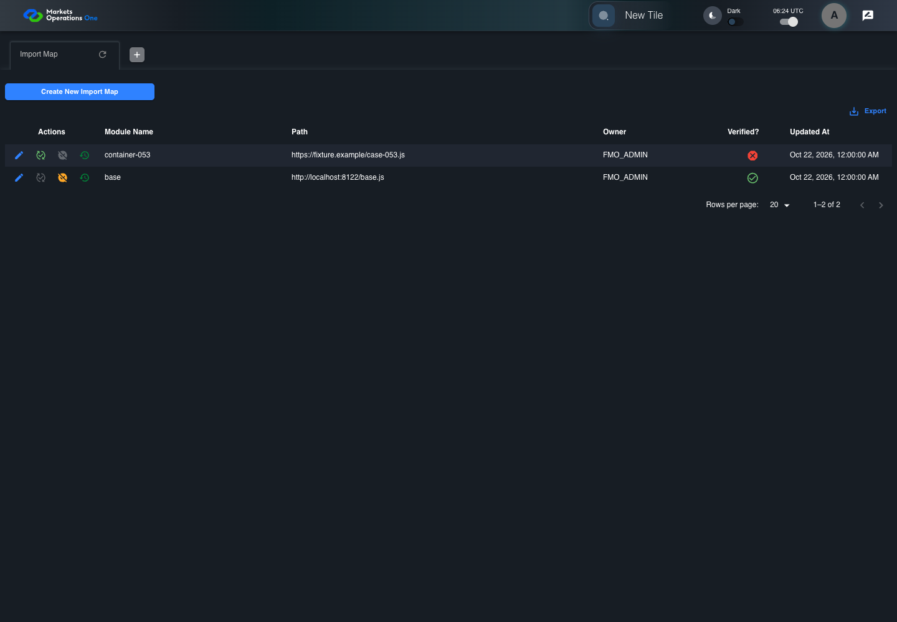
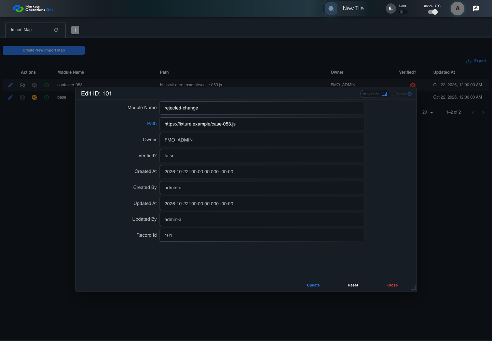
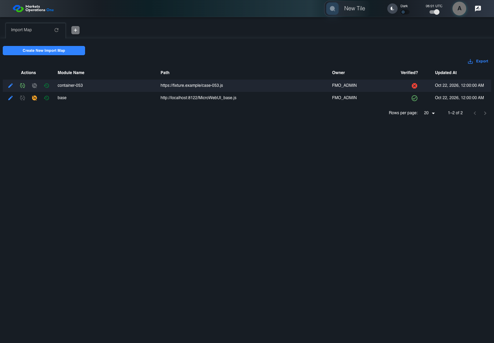
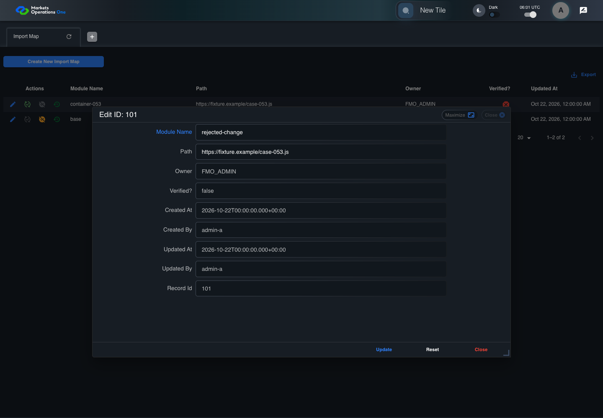
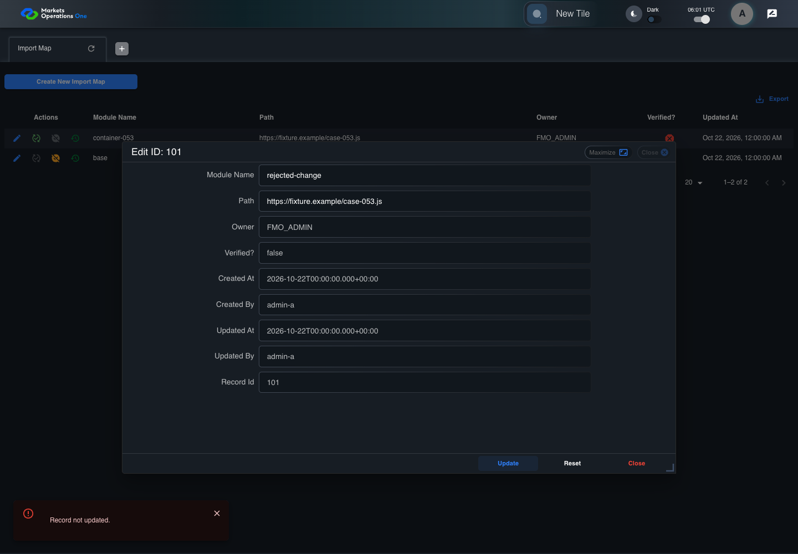

All canonical cases
BFF-ADM-053: Handle Import Map update database failure Business acceptance remains unverified. Owner: unknown. Review the canonical definition and fixture limits before acceptance.
Latest local result: PASS Business acceptance: NOT_ESTABLISHED.
The latest local result describes execution. The historical definition review assesses the case design before execution.
Latest step screenshot evidence: COMPLETE . 13/13 canonical steps have execution screenshots.
Canonical Gherkin definition . Definition version: 2. SHA-256: 089f1c167a0a8b1fdc11a9659956f22267e3427c573af437c97ff30616747a67.
Historical definition review (preflight): UNVERIFIED A definition review FAIL can coexist with local PASS. The definition failed preflight quality checks.
This historical review does not change the latest execution result. Resolve definition gaps before business acceptance.
Canonical Gherkin steps Feature: Admin persistence
@BFF-ADM-053
Scenario: Handle Import Map update database failure
Given Admin A uses subject "admin-a" with role "FMO_ADMIN" in an isolated authenticated browser
And the controlled Import Map fixture records the initial grid rows and persisted values
And the Import Map grid has record "101" owned by "FMO_ADMIN"
And the baseline fixture data defines "Module Name" as "container-053"
And the baseline fixture data defines "Path" as "https://fixture.example/case-053.js"
And the next BFF repository save throws a controlled database exception
When Admin A clicks the button labeled "Edit" in the Import Map grid row with "Record Id" "101"
Then the dialog titled "edit ID: 101" is visible on the Import Map administration page
When Admin A fills the textbox labeled "Module Name" with "rejected-change" in dialog "edit ID: 101"
And Admin A fills the textbox labeled "Path" with "https://fixture.example/case-053.js" in dialog "edit ID: 101"
And Admin A clicks the button labeled "Update" in dialog "edit ID: 101"
Then the alert with severity "error" in the portal snackbar contains the exact text "Record not updated."
And the Import Map data grid with column "Record Id" row identifiers and loaded field values equal the initial grid snapshot on the Import Map administration page Acceptance and evidence limits: NO_COMPLETE_REAL_APPLICATION_BINDING, CANONICAL_REVIEW_OR_EVIDENCE_UNRESOLVED.
Planned essential canonical frames: 3. Plan completeness requires separate review.
Latest attempt BFF-ADM-053 current BFF administration through actual UI PASS · application/run-072/bff-adm-053-current-bff-administration-through-actual-ui-20b2277bb16a-attempt-1 · ACTUAL_APPLICATION_LOCAL_SERVICES
Actual current React and exact-current BFF admin controllers/services/JPA with actual migration DDL in disposable PostgreSQL. Controlled OUD/EMS2 identities and local Spring bootstrap. Fixture SQL seeds/mutates isolated records; service errors are actual database errors. Undefined agreed messages remain unresolved acceptance.
2026-10-22T06:44:19.536Z to 2026-10-22T06:44:24.692Z
Assertions and result · Artifact manifest · Exact run inputs and source hashes
Result SHA-256: ab6ca86503bbae7ce80f2920c5c4c564728989a74a404eacb154a8f1f94d6b8a Playwright trace
Machine observations Screenshot capture: CAPTURED. Named frames: 14.
Step screenshot evidence: COMPLETE. 13/13 canonical steps have execution screenshots.
Canonical step timeline Given Admin A uses subject "admin-a" with role "FMO_ADMIN" in an isolated authenticated browser
1. step-01 Visible state after step 1: Given Admin A uses subject "admin-a" with role "FMO_ADMIN" in an isolated authenticated browser
2026-10-22T06:44:21.872Z · 1440×100088cd3c0c7b0fd84f8123407a889e79411f8b6c797183fabd9c1c0bdf7ae354a3 And the controlled Import Map fixture records the initial grid rows and persisted values
2. step-02 Visible state after step 2: And the controlled Import Map fixture records the initial grid rows and persisted values
2026-10-22T06:44:22.025Z · 1440×100088cd3c0c7b0fd84f8123407a889e79411f8b6c797183fabd9c1c0bdf7ae354a3 And the Import Map grid has record "101" owned by "FMO_ADMIN"
3. step-03 Visible state after step 3: And the Import Map grid has record "101" owned by "FMO_ADMIN"
2026-10-22T06:44:22.112Z · 1440×100088cd3c0c7b0fd84f8123407a889e79411f8b6c797183fabd9c1c0bdf7ae354a3 And the baseline fixture data defines "Module Name" as "container-053"
4. step-04 Visible state after step 4: And the baseline fixture data defines "Module Name" as "container-053"
2026-10-22T06:44:22.200Z · 1440×100088cd3c0c7b0fd84f8123407a889e79411f8b6c797183fabd9c1c0bdf7ae354a3 And the baseline fixture data defines "Path" as "https://fixture.example/case-053.js"
5. step-05 Visible state after step 5: And the baseline fixture data defines "Path" as "https://fixture.example/case-053.js"
2026-10-22T06:44:22.300Z · 1440×100088cd3c0c7b0fd84f8123407a889e79411f8b6c797183fabd9c1c0bdf7ae354a3 And the next BFF repository save throws a controlled database exception
6. step-06 Visible state after step 6: And the next BFF repository save throws a controlled database exception
2026-10-22T06:44:22.375Z · 1440×100088cd3c0c7b0fd84f8123407a889e79411f8b6c797183fabd9c1c0bdf7ae354a3 When Admin A clicks the button labeled "Edit" in the Import Map grid row with "Record Id" "101"
7. step-07 Visible state after step 7: When Admin A clicks the button labeled "Edit" in the Import Map grid row with "Record Id" "101"
2026-10-22T06:44:22.715Z · 1440×1000bf7a8de9938462c40d3b1d65a1f04ff0f157d45fececd63f78a768c8563879c4 Then the dialog titled "edit ID: 101" is visible on the Import Map administration page
8. step-08 Visible state after step 8: Then the dialog titled "edit ID: 101" is visible on the Import Map administration page
2026-10-22T06:44:22.804Z · 1440×1000cc94a45f56d0a7b050220b1ccc43fda2ee2a76ebdceb57886731144107b34f14 When Admin A fills the textbox labeled "Module Name" with "rejected-change" in dialog "edit ID: 101"
9. step-09 Visible state after step 9: When Admin A fills the textbox labeled "Module Name" with "rejected-change" in dialog "edit ID: 101"
2026-10-22T06:44:23.311Z · 1440×1000ead0e40badd2c27201f9e53da3668c70979f98947b5483ef2671f750063bbba0 And Admin A fills the textbox labeled "Path" with "https://fixture.example/case-053.js" in dialog "edit ID: 101"
10. step-10 Visible state after step 10: And Admin A fills the textbox labeled "Path" with "https://fixture.example/case-053.js" in dialog "edit ID: 101"
2026-10-22T06:44:23.736Z · 1440×10008708a4894a85bd1e58df63c310eda929c1c30c0deb8540fe8ebb8aba38a755bb And Admin A clicks the button labeled "Update" in dialog "edit ID: 101"
11. step-11 Visible state after step 11: And Admin A clicks the button labeled "Update" in dialog "edit ID: 101"
2026-10-22T06:44:24.022Z · 1440×10006322f9a72d678e888b6585127d882c2cabd1bb94c154514a015ed328e3a491ba Then the alert with severity "error" in the portal snackbar contains the exact text "Record not updated."
12. step-12 Visible state after step 12: Then the alert with severity "error" in the portal snackbar contains the exact text "Record not updated."
2026-10-22T06:44:24.087Z · 1440×10005f427bc3e39da6c964e8fabef93b8c43602993ff142d785bb10ca03657b7ec72 And the Import Map data grid with column "Record Id" row identifiers and loaded field values equal the initial grid snapshot on the Import Map administration page
13. step-13 Visible state after step 13: And the Import Map data grid with column "Record Id" row identifiers and loaded field values equal the initial grid snapshot on the Import Map administration page
2026-10-22T06:44:24.231Z · 1440×10005f427bc3e39da6c964e8fabef93b8c43602993ff142d785bb10ca03657b7ec72 Additional named frames 14. final-result The final visible state after the named test assertions.
2026-10-22T06:44:24.321Z · 1440×10005f427bc3e39da6c964e8fabef93b8c43602993ff142d785bb10ca03657b7ec72 Screenshots establish visible state only. Assertions and traces support functional claims.
Earlier attempt history (2) Earlier attempt PASS (superseded by latest PASS) BFF-ADM-053 current BFF administration through actual UI PASS · application/run-066/bff-adm-053-current-bff-administration-through-actual-ui-20b2277bb16a-attempt-1 · ACTUAL_APPLICATION_LOCAL_SERVICES
Actual current React and exact-current BFF admin controllers/services/JPA with actual migration DDL in disposable PostgreSQL. Controlled OUD/EMS2 identities and local Spring bootstrap. Fixture SQL seeds/mutates isolated records; service errors are actual database errors. Undefined agreed messages remain unresolved acceptance.
2026-10-22T06:24:19.074Z to 2026-10-22T06:24:22.572Z
Assertions and result · Artifact manifest · Exact run inputs and source hashes
Result SHA-256: ee3c93beafd30509411f897d32c3b378d78fa4f6a48ef2894b36914d8cd15b73 Playwright trace
Machine observations Screenshot capture: CAPTURED. Named frames: 14.
Step screenshot evidence: COMPLETE. 13/13 canonical steps have execution screenshots.
Canonical step timeline Given Admin A uses subject "admin-a" with role "FMO_ADMIN" in an isolated authenticated browser
1. step-01 Visible state after step 1: Given Admin A uses subject "admin-a" with role "FMO_ADMIN" in an isolated authenticated browser
2026-10-22T06:24:20.546Z · 1440×1000e995502acc8600221f1a95cdc7b6dcaefddea8a1e2639edf350de10c09e4ddfb And the controlled Import Map fixture records the initial grid rows and persisted values
2. step-02 Visible state after step 2: And the controlled Import Map fixture records the initial grid rows and persisted values
2026-10-22T06:24:20.661Z · 1440×1000e995502acc8600221f1a95cdc7b6dcaefddea8a1e2639edf350de10c09e4ddfb And the Import Map grid has record "101" owned by "FMO_ADMIN"
3. step-03 Visible state after step 3: And the Import Map grid has record "101" owned by "FMO_ADMIN"
2026-10-22T06:24:20.691Z · 1440×1000f2efcba9ffac0a9fa5922979909779b5ef6660013e8f46ca43ced46732d34fa3 And the baseline fixture data defines "Module Name" as "container-053"
4. step-04 Visible state after step 4: And the baseline fixture data defines "Module Name" as "container-053"
2026-10-22T06:24:20.724Z · 1440×1000e995502acc8600221f1a95cdc7b6dcaefddea8a1e2639edf350de10c09e4ddfb And the baseline fixture data defines "Path" as "https://fixture.example/case-053.js"

5. step-05 Visible state after step 5: And the baseline fixture data defines "Path" as "https://fixture.example/case-053.js"
2026-10-22T06:24:20.758Z · 1440×1000f2efcba9ffac0a9fa5922979909779b5ef6660013e8f46ca43ced46732d34fa3 And the next BFF repository save throws a controlled database exception
6. step-06 Visible state after step 6: And the next BFF repository save throws a controlled database exception
2026-10-22T06:24:20.791Z · 1440×1000e995502acc8600221f1a95cdc7b6dcaefddea8a1e2639edf350de10c09e4ddfb When Admin A clicks the button labeled "Edit" in the Import Map grid row with "Record Id" "101"
7. step-07 Visible state after step 7: When Admin A clicks the button labeled "Edit" in the Import Map grid row with "Record Id" "101"
2026-10-22T06:24:20.983Z · 1440×1000c8549b41beb7e31cb1972cdf6576d1200dfba8d90e4f4a37efa01d0deb41feec Then the dialog titled "edit ID: 101" is visible on the Import Map administration page
8. step-08 Visible state after step 8: Then the dialog titled "edit ID: 101" is visible on the Import Map administration page
2026-10-22T06:24:21.032Z · 1440×1000168c2d967b2f5f31db76ac5f19902dc662cf24069ab57725616ea37709c68bcc When Admin A fills the textbox labeled "Module Name" with "rejected-change" in dialog "edit ID: 101"
9. step-09 Visible state after step 9: When Admin A fills the textbox labeled "Module Name" with "rejected-change" in dialog "edit ID: 101"
2026-10-22T06:24:21.434Z · 1440×1000a9375c80e9ec721f424e5a7aa89ae6de03b9deb05dedb2eec3aa1f9f73f87a89 And Admin A fills the textbox labeled "Path" with "https://fixture.example/case-053.js" in dialog "edit ID: 101"

10. step-10 Visible state after step 10: And Admin A fills the textbox labeled "Path" with "https://fixture.example/case-053.js" in dialog "edit ID: 101"
2026-10-22T06:24:21.876Z · 1440×10000f2bf427d85b93788f006e136c53aa8161bbf62f9eab207533a92878a8177dcf And Admin A clicks the button labeled "Update" in dialog "edit ID: 101"
11. step-11 Visible state after step 11: And Admin A clicks the button labeled "Update" in dialog "edit ID: 101"
2026-10-22T06:24:22.119Z · 1440×1000fe38f0f3c0bf91dd9feeebd11fdf65ff7e7e739499f8e5e15f3eae1d8d5d06a0 Then the alert with severity "error" in the portal snackbar contains the exact text "Record not updated."
12. step-12 Visible state after step 12: Then the alert with severity "error" in the portal snackbar contains the exact text "Record not updated."
2026-10-22T06:24:22.164Z · 1440×1000c1f09f523a2b551b06d8348305106d300e62f3aec7630a08c6ee511dd74c1506 And the Import Map data grid with column "Record Id" row identifiers and loaded field values equal the initial grid snapshot on the Import Map administration page
13. step-13 Visible state after step 13: And the Import Map data grid with column "Record Id" row identifiers and loaded field values equal the initial grid snapshot on the Import Map administration page
2026-10-22T06:24:22.264Z · 1440×1000c1f09f523a2b551b06d8348305106d300e62f3aec7630a08c6ee511dd74c1506 Additional named frames 14. final-result The final visible state after the named test assertions.
2026-10-22T06:24:22.331Z · 1440×1000c1f09f523a2b551b06d8348305106d300e62f3aec7630a08c6ee511dd74c1506 Screenshots establish visible state only. Assertions and traces support functional claims.
Earlier attempt PASS (superseded by latest PASS) BFF-ADM-053 current BFF administration through actual UI PASS · application/run-062/bff-adm-053-current-bff-administration-through-actual-ui-20b2277bb16a-attempt-1 · ACTUAL_APPLICATION_LOCAL_SERVICES
Actual current React and exact-current BFF admin controllers/services/JPA with actual migration DDL in disposable PostgreSQL. Controlled OUD/EMS2 identities and local Spring bootstrap. Fixture SQL seeds/mutates isolated records; service errors are actual database errors. Undefined agreed messages remain unresolved acceptance.
2026-10-22T06:01:53.929Z to 2026-10-22T06:01:59.423Z
Assertions and result · Artifact manifest · Exact run inputs and source hashes
Result SHA-256: 7cf595cfc1d0342a6970f2a89ba29122ad10731669d724d2f700135ccb656ffd Playwright trace
Machine observations Screenshot capture: CAPTURED. Named frames: 14.
Step screenshot evidence: COMPLETE. 13/13 canonical steps have execution screenshots.
Canonical step timeline Given Admin A uses subject "admin-a" with role "FMO_ADMIN" in an isolated authenticated browser

1. step-01 Visible state after step 1: Given Admin A uses subject "admin-a" with role "FMO_ADMIN" in an isolated authenticated browser
2026-10-22T06:01:56.797Z · 1440×100051104eafaf57b954fba8cc8b44ae02095263f4dc3c4678937b808683b12822e2 And the controlled Import Map fixture records the initial grid rows and persisted values
2. step-02 Visible state after step 2: And the controlled Import Map fixture records the initial grid rows and persisted values
2026-10-22T06:01:56.960Z · 1440×100051104eafaf57b954fba8cc8b44ae02095263f4dc3c4678937b808683b12822e2 And the Import Map grid has record "101" owned by "FMO_ADMIN"
3. step-03 Visible state after step 3: And the Import Map grid has record "101" owned by "FMO_ADMIN"
2026-10-22T06:01:57.024Z · 1440×100051104eafaf57b954fba8cc8b44ae02095263f4dc3c4678937b808683b12822e2 And the baseline fixture data defines "Module Name" as "container-053"
4. step-04 Visible state after step 4: And the baseline fixture data defines "Module Name" as "container-053"
2026-10-22T06:01:57.092Z · 1440×100051104eafaf57b954fba8cc8b44ae02095263f4dc3c4678937b808683b12822e2 And the baseline fixture data defines "Path" as "https://fixture.example/case-053.js"
5. step-05 Visible state after step 5: And the baseline fixture data defines "Path" as "https://fixture.example/case-053.js"
2026-10-22T06:01:57.173Z · 1440×100051104eafaf57b954fba8cc8b44ae02095263f4dc3c4678937b808683b12822e2 And the next BFF repository save throws a controlled database exception
6. step-06 Visible state after step 6: And the next BFF repository save throws a controlled database exception
2026-10-22T06:01:57.224Z · 1440×100051104eafaf57b954fba8cc8b44ae02095263f4dc3c4678937b808683b12822e2 When Admin A clicks the button labeled "Edit" in the Import Map grid row with "Record Id" "101"
7. step-07 Visible state after step 7: When Admin A clicks the button labeled "Edit" in the Import Map grid row with "Record Id" "101"
2026-10-22T06:01:57.469Z · 1440×1000826c99e0bd1439efa398e776ad992e8af7c2c3aaf98f6eb382807fcab9f795f0 Then the dialog titled "edit ID: 101" is visible on the Import Map administration page
8. step-08 Visible state after step 8: Then the dialog titled "edit ID: 101" is visible on the Import Map administration page
2026-10-22T06:01:57.543Z · 1440×100066483a951df4fa846b3538caa0cd2bce40bcfa053e273ad1510a54a6ea559ea2 When Admin A fills the textbox labeled "Module Name" with "rejected-change" in dialog "edit ID: 101"

9. step-09 Visible state after step 9: When Admin A fills the textbox labeled "Module Name" with "rejected-change" in dialog "edit ID: 101"
2026-10-22T06:01:57.931Z · 1440×10001c9d870b9cbfa0908354062aa706a0bb4f8edc77a0b2119c7b959440fccac5e5 And Admin A fills the textbox labeled "Path" with "https://fixture.example/case-053.js" in dialog "edit ID: 101"
10. step-10 Visible state after step 10: And Admin A fills the textbox labeled "Path" with "https://fixture.example/case-053.js" in dialog "edit ID: 101"
2026-10-22T06:01:58.328Z · 1440×1000d8029daa8ea3f0eae9c2ce466d0667b07c6f1be095407b0caf77b2767af4758f And Admin A clicks the button labeled "Update" in dialog "edit ID: 101"
11. step-11 Visible state after step 11: And Admin A clicks the button labeled "Update" in dialog "edit ID: 101"
2026-10-22T06:01:58.615Z · 1440×1000ed0a587c03ee2f67dd07aac6a23772337cd581a74d9dd0cb6e130a84ad763cbc Then the alert with severity "error" in the portal snackbar contains the exact text "Record not updated."

12. step-12 Visible state after step 12: Then the alert with severity "error" in the portal snackbar contains the exact text "Record not updated."
2026-10-22T06:01:58.698Z · 1440×1000955faeea4e5e9491a36de3915290e328c12d343d21ddeceaedc2bbc12d11defc And the Import Map data grid with column "Record Id" row identifiers and loaded field values equal the initial grid snapshot on the Import Map administration page
13. step-13 Visible state after step 13: And the Import Map data grid with column "Record Id" row identifiers and loaded field values equal the initial grid snapshot on the Import Map administration page
2026-10-22T06:01:58.830Z · 1440×1000955faeea4e5e9491a36de3915290e328c12d343d21ddeceaedc2bbc12d11defc Additional named frames 14. final-result The final visible state after the named test assertions.
2026-10-22T06:01:58.947Z · 1440×1000955faeea4e5e9491a36de3915290e328c12d343d21ddeceaedc2bbc12d11defc Screenshots establish visible state only. Assertions and traces support functional claims.